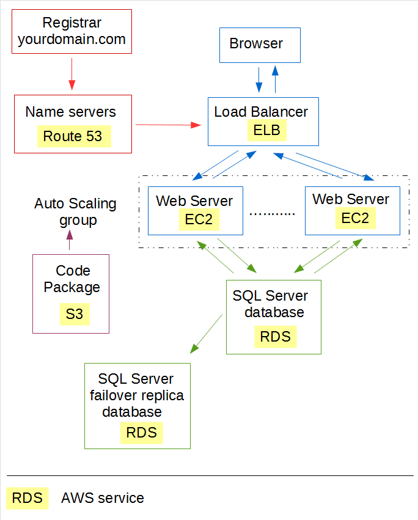

Introduction
This is part 4 of a
series of articles
about deploying your site to
Amazon Web Services (AWS),
Amazon's counterpart to Windows Azure.
In parts 1, 2 and 3, you saw how to deploy a load balanced IIS based web site with a SQL Server database and its own domain name.

Those parts showed how to do this using
the AWS service
Elastic Beanstalk.
This allows you to define a configuration with EC2 servers, database server, etc. by completing a series of menus.
This article introduces AWS
CloudFormation.
This service too lets you create servers and deploy code. But instead of completing menus, you express your desired configuration
in a text file called a template. You then tell CloudFormation to "launch" this template to create a "stack" - AWS
speak for the servers, etc. you specified in the template.
Each stack has a name, such as "Live" or "Test". To change the server configuration
for a stack, you first change the template and then tell CloudFormation to update the stack. It will then
migrate your stack to the desired configuration expressed in your new template, with as little disruption as possible.
CloudFormation gives you much more control than Elastic Beanstalk, but there are many more details to get right - and many ways
to get it wrong. I found that the learning curve can be quite steep.
What is in this article
This article shows how to:
-
Deploy all web and database servers and other infrastructure, as specified in a CloudFormation template (a text file);
-
And then deploy the code of an ASP.NET web site;
-
Update the web.config of the site with the server name and login details of the RDS database;
-
Get IIS, etc. started on the web servers so the site is up and running;
-
All fully hands off, by running a single PowerShell script.
After you've deployed your servers and web sites, you can use the same PowerShell script to update your configuration:
-
If you changed your CloudFormation template, for example to add or remove servers,
all required changes will be made automatically with minimal disruption;
-
If you created a new version of your web site code, the web servers will be upgraded automatically:
-
Rather than taking all servers off line, the servers are upgraded one by one to minimize disruption.
-
Instead of upgrading servers in place, new servers are created running the new software and servers running the old software
are terminated. This ensures your servers are all in the same known state after an upgrade.
Why use CloudFormation?
Why would you express your desired server configuration in a text file and then
have
CloudFormation
build that configuration for you? Why not launch the servers yourself from the AWS management console?
-
Repeatable - Having your configuration in a text file makes it trivial to create
a new environment with the same configuration. For example, make a carbon copy of your live environment
for testing purposed.
-
Source control -
A text file can easily be stored in your
favorite source control system, such as GIT or TFS. Keep track of changes,
roll back to previous versions, etc.
-
Documentation -
A text files makes it easier to figure out what bits and pieces of infrastructure
you have lying around.
Essentially, CloudFormation lets you manage your infrastructure in a similar way to
the code base of your web site.
Infrastructure goal
The goal is to deploy a web site that uses a database and that has its own domain. The infrastructure
is going to look like this:

Lets start from the center of the picture:
-
Web servers on EC2 instances -
The web site will run on one or more EC2 instances - virtual machines in the AWS cloud
running IIS.
-
SQL Server database server -
The web sites access one or more SQL Server databases hosted on an
RDS (Relational Database Service) instance.
RDS is a fully managed database server as a service with automatic
backups, etc.
-
SQL Server failover replica -
To achieve high availability, you can have a hot standby that automatically takes over when the database server fails.
This solution is probably too expensive for a personal site, but very reasonably priced for a company.
@@@@@@@ pricing details @@@@@@@@
In the downloads you'll find templates for both the solution with replica and the solution without replica.
-
Auto Scaling group -
The Auto Scaling group starts more EC2 instances when the existing
instances get overloaded, and terminates instances when there is little to do.
-
Code package stored in S3 bucket -
Seeing that the Auto Scaling group starts and terminates EC2 instances at will, there is no point in deploying software to
individual servers. Instead, a package file with all the code is stored in an
S3 bucket (the S3 service lets you store files in the cloud).
When the Auto Scaling group starts a new EC2 instance, it retrieves the package from the S3 bucket and installs it on the new instance.
-
Load Balancer -
The ELB (Elastic Load Balancer)
receives web requests from the Internet and parcels them out to the available web servers.
-
DNS Name Servers -
To translate your domain name to the IP address of the load balancer,
we'll use the
Route 53 service
to provide the required name servers.
You will have to manually update the settings of your domain at your registrar
so it uses these new name servers. This is a one off.
Solution Components
Lets have a look at the bits of code that will create all this.
These are all in the
downloads.
Detailed installation instructions are in the
next section.
-
CloudFormation template that describes in detail all the bits of infrastructure we're after.
This template spins up a SQL Server Express database server without failover replica.
-
CloudFormation template that
spins up a SQL Server Standard Edition database server with failover replica.
-
Very simple sample web site
that uses a database. You may want to use this to experiment before moving to something more complicated.
-
Deploy.ps1 PowerShell script. Sits in the root directory of the web site. Is executed after the Auto Scaling group
has placed your web site code on a newly created web server. Responsible for starting IIS, etc. When you decide to deploy some other
web site, be sure to copy over this PowerShell script to its root directory.
-
Publish.ps1
PowerShell script that packages up your web site code, stores it in the S3 bucket and calls the CloudFormation service
to deploy the infrastructure. Also used to update an existing stack.
-
Stack policy
that determines what servers can be replaced during an update.
When you update your stack, then some changes may involve CloudFormation terminating a server and starting a new
one with the new configuration. That's ok for a web server, but not for a database server where you'd lose all your data
(more about stack policies).
-
User policy
that provides the Publish.ps1 script all the permissions it needs to spin up all the infrastructure.
Detailed installation steps
1. AWS Account
I'm assuming you have an AWS account
(get one),
and that you have a key pair
(get one).
2. Download
Download all the
components
to a directory on your computer.
It may be easiest to simply
download the entire Github project
with all the articles in this series and then grab the components.
3. Set user policy
The user (probably yourself) that will run the Publish.ps1 script
needs to have all the permissions required to spin up all the different infrastructure elements.
You express these permissions in the form of an
IAM policy.
You then attach that policy to the user.
First create the policy:
-
Sign into the AWS Console;
-
Click Services (top of the screen) | IAM | Policies | Create Policy;
-
Click Select for Create your own policy;
-
Make up a nice name for your new policy, such as "Publish-CloudFormation-Stack".
Whatever name you choose, write it down somewhere.
-
Open the
user policy file
you just downloaded and copy and paste its content to the Policy Document. You'll see that a policy is simply a JSON object.
-
Click Create Policy;
Then attach your new policy to the user:
-
Click Users;
-
Click the user that will be running the Publish.ps1 script;
-
Click Attach Policy;
-
Enter the policy you just created in the filter. Select your policy. Click Attach Policy;
4. Store credentials in credentials store
When you run an AWS PowerShell command, you have to specify your credentials.
You could pass your credentials to each command, but that means your credentials are exposed in your PowerShell scripts.
A better way is to store your credentials in a
credentials store.
This is file stored on your machine. You give that credentials store a name. Inside your script, you can then specify that name
to get all PowerShell commands to use your credentials.
To make this work, you need the access key and secret key of the user that will run your Publish.ps1 script
(how to get these).
You also need to think of a name for your new credentials store. Maybe something like "mycredentials".
Now open a PowerShell command window and enter:
Set-AWSCredentials -AccessKey <acess key> -SecretKey <secret key> -StoreAs <store name>
If you have a look at the
Publish.ps1
script, it uses this line to make the credentials available to the PowerShell commands in the current session:
Set-AWSCredentials -ProfileName <store name>
5. Create RDS option group to switch on SQL Server mirroring
You only need to do this if you want your SQL Server database server to have automatic fail over
to a hot standby.
AWS refers to this as a
Multi-AZ deployment
(more details).
It is based on the
SQL Server Mirroring
feature, available in
SQL Server Standard Edition
and higher (but not SQL Server Express or SQL Server Web).
To switch on mirroring,
you need to associate an
option group
that has the mirroring option enabled
with your SQL Server database server.
The Publish.ps1 script takes care of attaching the option group.
And it would have been natural to specify the option group along with all the other infrastructure
in the CloudFormation template. However, oddly, CloudFormation doesn't let you create option groups.
You'll have to create one manually once off.
To create the option group:
-
In the AWS console, click Services | RDS | Option Groups | Create Group;
-
Fill in a name and description. Write down the name, you'll need it later on;
-
Set Engine to sqlserver-se (Standard Edition) or sqlserver-ee (Enterprise Edition);
-
Set Major Engine Version to version 11 (which is the same as the EngineVersion specified in the
CloudFormation template);
-
Click Create. This creates your option group and takes you back to the option groups list;
-
Select your new option group;
-
Click Add Option (near top of the page);
-
Mirroring is the only option. You probably want to set Apply Immediately to Yes. Click Add Option.
---------------------------------------
@@@@@@@@@@@@@@@@@@
pricing
multi-az